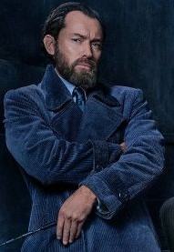
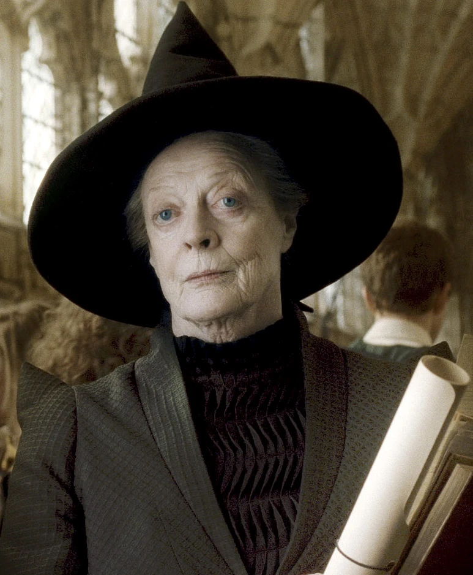
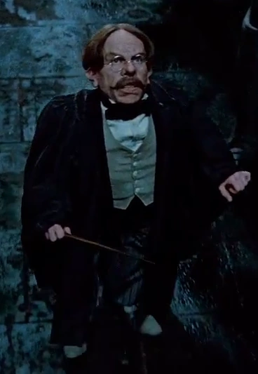
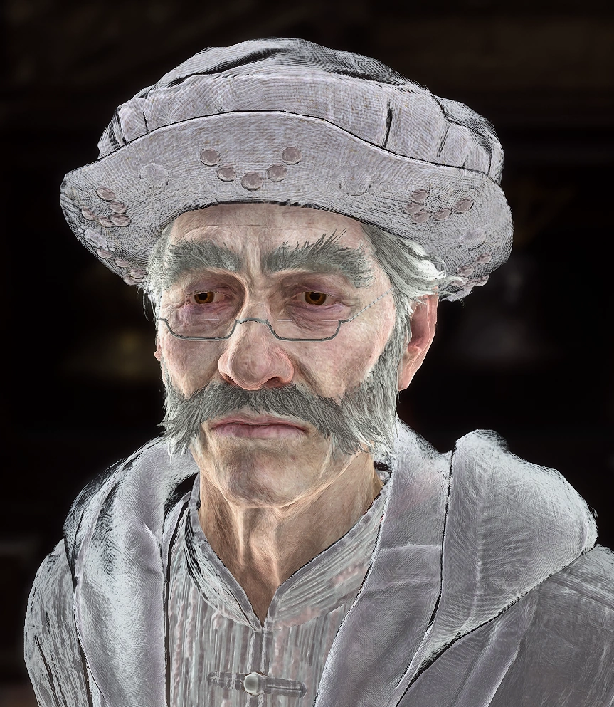
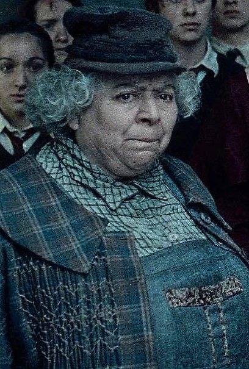
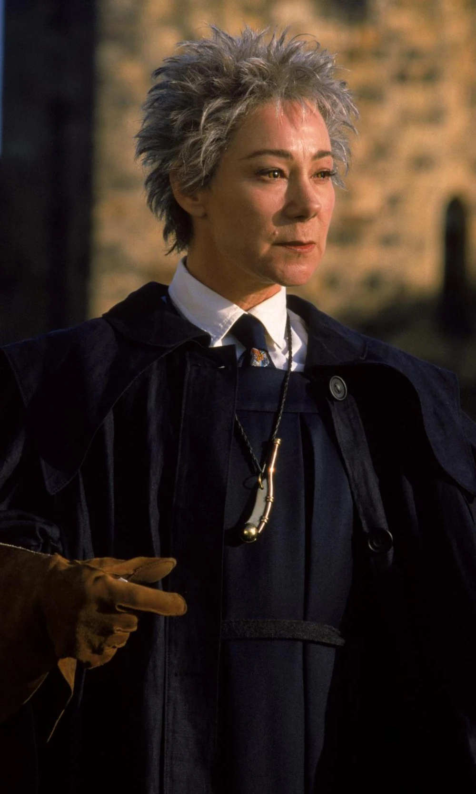

Professores
As aulas são ministradas por professores experientes, com uma abordagem única para ensinar a arte da comunicação eficaz. Os professores de Hogwarts são mestres na língua inglesa e nas diferentes formas de comunicação. Eles ajudam os alunos a entender os aspectos teóricos e práticos da língua, com abordagens únicas, baseadas nas peculiaridades de cada professor.
Diretor Dumbledore (Retórica e Filosofia da Linguagem)
O Diretor Dumbledore, com sua sabedoria vasta, é o professor ideal para aulas de retórica e filosofia da linguagem. Ele guia os alunos na reflexão sobre o poder das palavras, como elas moldam a sociedade e como usar a linguagem de forma ética e eficaz.
Professora McGonagall (Literatura e Redação Criativa)
A Professora McGonagall, com sua postura rigorosa e disciplinada, é responsável pelas aulas de literatura e redação criativa. Ela ensina os alunos a escrever histórias, poemas e ensaios criativos, com ênfase na estrutura narrativa, desenvolvimento de personagens e estilo literário. Sua exigente metodologia ajuda os alunos a desenvolver um rigor técnico, sem perder a originalidade e a expressividade.
Professor Snape (Análise Literária e Crítica)
O Professor Snape é um especialista em análise literária e crítica de textos. Ele guia os alunos na interpretação de obras literárias, ensinando-os a identificar temas, simbolismos e estruturas narrativas complexas. Sua postura sombria e exigente faz dele um mestre em instigar discussões profundas e desafiadoras sobre os textos.

Professor Flitwick (Linguística e Fonologia)
O pequeno e enérgico Flitwick é o especialista em fonologia e linguística, focando na pronúncia, entonação e as nuances sonoras da língua inglesa. Ele ajuda os alunos a melhorar suas habilidades de fala, ensinando-os a dominar a pronúncia correta de palavras e a fazer apresentações orais eficazes. Seus métodos envolventes e suas aulas práticas são muito apreciados por aqueles que precisavam aperfeiçoar suas habilidades de fala.
Professora Trelawney (Literatura Comparada e Poesia)
A Professora Trelawney, com seu jeito excêntrico e misterioso, é responsável pelas aulas de literatura comparada e poesia. Ela estimula os alunos a analisar textos de diferentes culturas e épocas, buscando semelhanças e contrastes entre as obras. Trelawney também incentiva a criação de poemas, explorando a linguagem figurada e os estilos poéticos mais variados.

Professor Binns (História da Literatura)
Como um fantasma que ainda percorre os corredores da escola, o Professor Binns é o responsável por ensinar a história da literatura inglesa. Ele guia os alunos pelo desenvolvimento da literatura desde a Idade Média até os tempos contemporâneos, com foco nos contextos históricos que moldaram os principais autores e movimentos literários. Suas aulas, apesar de monótonas, são uma excelente base para quem deseja compreender a evolução da língua e da escrita.
Professora Sprout (Escrita Criativa com Foco em Natureza e Meio Ambiente)
A Professora Sprout, com sua ligação à natureza, ensina os alunos a criar escritos inspirados na observação do mundo natural. Ela incentiva a criação de narrativas e ensaios ecológicos, explorando como a língua pode ser usada para descrever e conectar as pessoas com o meio ambiente ao seu redor.
Professora Hooch (Redação Técnica e Comunicação Profissional)
A Professora Hooch, com sua postura mais prática, é responsável por ensinar redação técnica e comunicação profissional. Ela ajuda os alunos a escrever relatórios, e-mails formais e até a se preparar para apresentações públicas de forma clara e objetiva.
